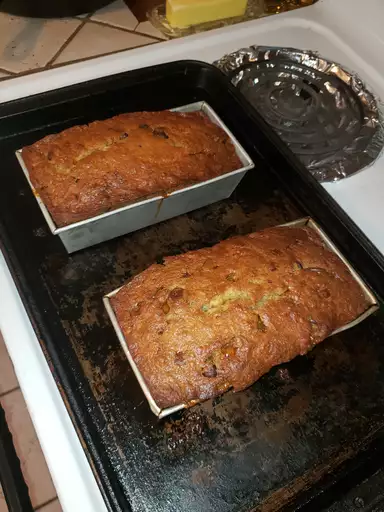

Banana Chocolate Chip Bread

Banana Chocolate Chip Bread
Ingredients
- 2 Cups all-purpose flour
- 1 Teaspoon baking powder
- 1 Teaspoon baking soda
- 1 Teaspoon salt
- 3 Ripe bananas, mashed
- 1 Tablespoon milk
- 1 Tablespoon ground cinnamon, or to taste
- 1 Cup white sugar
- 1/2 Cup butter, softened
- 2 Large eggs
- 1 Cup semisweet chocolate chips
Steps
- Preheat the oven to 325 degrees F (165 degrees C). Grease a 9x5-inch loaf pan, preferably glass.
- Mix flour, baking powder, baking soda, and salt in a bowl. Stir bananas, milk, and cinnamon in another bowl.
Beat sugar and butter together in a third bowl with an electric mixer until light and fluffy; add eggs one at a time,
beating well after each addition. Stir banana mixture into butter mixture; mix in flour mixture until just blended.
Fold in chocolate chips; pour batter into the prepared loaf pan.
- Bake in the preheated oven until a toothpick inserted into the center comes out clean, about 70 minutes.
Cool in the pan for 10 minutes before removing to cool completely on a wire rack before slicing.